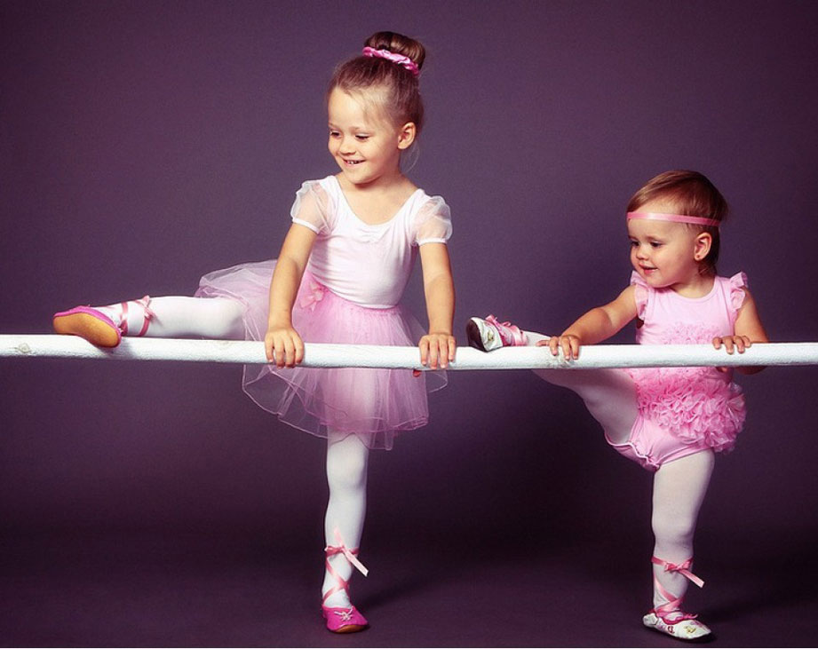

Каким спортом занять ребенка в 2-5 лет?
Достаточно ли ребенок двигается? Сколько нужно гулять? А не рано нам садиться на беговел? Обязательно ли ходить в бассейн? Когда уже можно записаться в спортивную секцию? Этими и другими вопросами вы мучаетесь прямо сейчас, если вашему ребенку от 2 до 5 лет. При этом, даже у Всемирной Организации Здравоохранения (ВОЗ) нет никаких четких рекомендаций по физической активности для детей этого возраста. Хотя по статистике, в последние 10 лет зафиксировано снижение этой самой активности. Это плохо со всех сторон: и с точки зрения развития моторных навыков, костной ткани, мышечной массы, и с точки зрения социализации. SportCloud разобрался, какой спорт можно предложить маленьким детям.
К 2025 году в мире с проблемой ожирения столкнутся более 70 миллионов детей. Согласно данным исследовательского центра эндокринологии Министерства здравоохранения России, за последний год показатели ожирения среди учащихся выросли с 2% до 8%, а избыточный вес был зарегистрирован у 11–18% детей разных возрастных групп.
В 2–3 года ребенку рекомендуется не менее 30 минут в день организованной физической активности вместе с родителями. Большинство детей в этом возрасте еще не способны оторваться от мамы и папы и пойти заниматься в секцию. Так что вам нужно самим развивать ребенка. Это могут быть танцы, игра в догонялки, игра в мяч, прыжки на твердой поверхности. Последнее прекрасно развивает мышцы и кости ребенка. Помните, что ребенку в таком возрасте сложно держать концентрацию даже на протяжении получаса. Так что можно заниматься три раза по 10 минут в течение дня. Плюс к этому малышам требуется от 60 до 180 минут неструктурированной физической активности в день. Речь идет о прогулках на свежем воздухе и игре на детской площадке.
В 3–5 лет у детей уже более развиты координация в пространстве, моторные навыки. Специалисты рекомендуют заниматься спортом от часа в день вместе с родителями дома или в секции. Потребность в свежем воздухе остается такой же: это прогулки от часа до трех.
Спортивный психолог Анастасия Сторожева рекомендует отдавать ребенка в спортивные секции еще до школы. Это вам очень поможет в дальнейшем. Спорт научит малыша дисциплине, ответственности и четкому распорядку дня. Адаптация к школе пройдет значительно легче.
Большинство коммерческих спортивных секций сейчас открывают свои двери для совсем маленьких детей. В футбол, например, берут уже трехлеток. Понятно, что футбола как такового в этой секции практически не будет. Ребенок будет бегать, прыгать и делать простейшие упражнения с мячом. При желании такую футбольную секцию для малыша вы можете организовать у себя дома. Вам не придется одевать и отвозить куда–то ребенка — колоссальная экономия времени на лицо. С другой стороны, не все родители готовы становиться еще и тренерами. Поэтому мы узнали у специалистов о наиболее гармоничных видах спорта, которыми можно заниматься с совсем маленькими детьми.
В секцию беговела вашего ребенка возьмут уже с года. Там заниматься с малышом будет специалист, который сделает занятие интересным и продуктивным. Например, подготовит полосу препятствий. Естественно, заниматься с ребенком на беговеле могут и сами родители.
У беговела много плюсов. Он развивает координацию, баланс, учит чувствовать свое тело и не бояться падений. Те дети, которые научились ездить на беговеле, потом без труда пересядут на велосипед. Единственный минус — это то, что ездить на беговелах учат в основном в частных школах, а значит, родителям надо платить за тренировки.
Выбирайте модель с низким центром тяжести, устойчивую, с невысокими резиновыми колесами и металлической рамой. Помните, что на беговеле ребенок может развить приличную скорость, так что нужно позаботиться о защите головы. Это может быть шлем или хотя бы мягкая шапка.
В секцию танцевального спорта возьмут малышей 3–4 лет. Занятия танцами развивают гибкость, ловкость, пластичность, помогают ребенку почувствовать музыку и научиться выражать свои эмоции в движении. Танцы — это еще и эстетическое воспитание, которое помогает раскрыть творческий потенциал ребенка. В общем, одни плюсы. Помните, что танцевать вы можете как в секции, так и дома.
Танцы — это отлично в любом возрасте! Как только ребенок может стоять на ногах, так сразу его можно вовлекать в ритмическое движение под музыку. До трех лет дети в большинстве своем могут испугаться танцевального зала и незнакомых людей вокруг. Так что танцуйте дома. Хотя, если ваш ребенок ходит в сад, проблемы страха может и не быть. В этом случае можно сразу отвести малыша в секцию.
Лыжи, как беговые, так и горные, будут полезны малышам со всех точек зрения. Это и физическая активность, и веселое времяпровождение, и закаливание. Воздействие минусовых температур запускает защитные процессы организма, укрепляя иммунитет не хуже витаминов. Лыжная тренировка — это хорошее настроение, отсутствие стресса и крепкий сон.
Поставить 3–летнего ребенка на беговые лыжи могут и сами родители. А вот в горных лыжах без инструктора — никуда.
В три года встать на горные лыжи абсолютно реально, а некоторые дети начинают и раньше, в 2,5 года. Но это зависит от крепости ног ребенка. По первому занятию сразу будет понятно, рано спортсмен пришел в секцию или в самый раз: ребенок должен стоять на лыжах ровно, не отклоняясь назад. Дальше инструктор придерживает спортсмена, объясняет ему, что давить надо на язычки ботинок, и ребенок уже делает параллельные спуски с очень маленького детского склона. Вот если всё это получилось, можно начинать заниматься. Бывает, что ребенок начинает отклоняться назад, сгибать ноги, это значит, что устоять на лыжах он пока не может.
Уже с 3 недель жизни можно начинать учить ребенка плавать и нырять. У новорожденных есть плавательный рефлекс, пребывание в воде для них естественно. А спустя несколько месяцев уже можно пойти с грудничком в специализированный бассейн: занятия для самых маленьких есть и в частных центрах, и при поликлиниках. Занятия по грудничковому плаванию проводятся 1–2 раза в неделю около 30 минут. Дети, которых учат плавать с рождения, закаляются, у них хороший сон и аппетит, они хорошо развиваются и, конечно, приобретают отличные навыки. С пяти лет детей начинают учить плавать без родителей.
Выбирайте маленькие бассейны с морской водой! Категорически не рекомендую плавать с ребенком в бассейне с хлорированной водой. Когда хлор контактирует с жидкостями, которые производит наше тело, возникают токсичные побочные продукты. В больших бассейнах, чтобы очистить воду, добавляют еще больше хлора, что усугубляет ситуацию. По хорошему, надо спускать воду и набирать новую, но это очень дорого.
Отдельно хотелось бы сказать про батут. Все дети любят прыгать. Этот вид активности развивает мышцы, суставы, костную ткань, улучшает координацию. Казалось бы, отличный вариант для малыша, тем более, что батуты сейчас можно найти везде: и в торговых центрах, и на городских праздниках. Вот только прыгать детям нужно на твердой поверхности, а не на батуте. Оказывается, у батута довольно плохая репутация среди врачей. Батут — травмоопасен, он подвергает детей риску растяжений, вывихов и повреждений головы. Американская академия педиатрии не рекомендует заниматься на батуте детям до 10 лет. Специалисты выступают против батутов в частных домах, на дачных участках и так далее.
- Домашние активные игры для малышей и их родителей
- Ходите как пингвин, прыгайте как лягушка, выгибайте спину как кошка. Имитируйте движения любых животных.
- Сядьте на пол напротив ребенка, возьмите его за руки. А теперь вместе отклоняйтесь вперед–назад. Можно при этом петь.
- Стоя, наклонитесь вперед и поставьте руки на землю. А теперь идите за руками медленно, как гусеница.
- Сядьте на пол. Пусть ребенок перепрыгивает через ваши ноги. Или встаньте в мостик, чтобы ребенок прополз под ним.
- Раскидайте на полу подушки и разные мелкие предметы, например, яблоки. Играйте в догонялки, причем малышу, убегая от вас, нужно преодолевать препятствия в виде подушек и собирать яблоки.